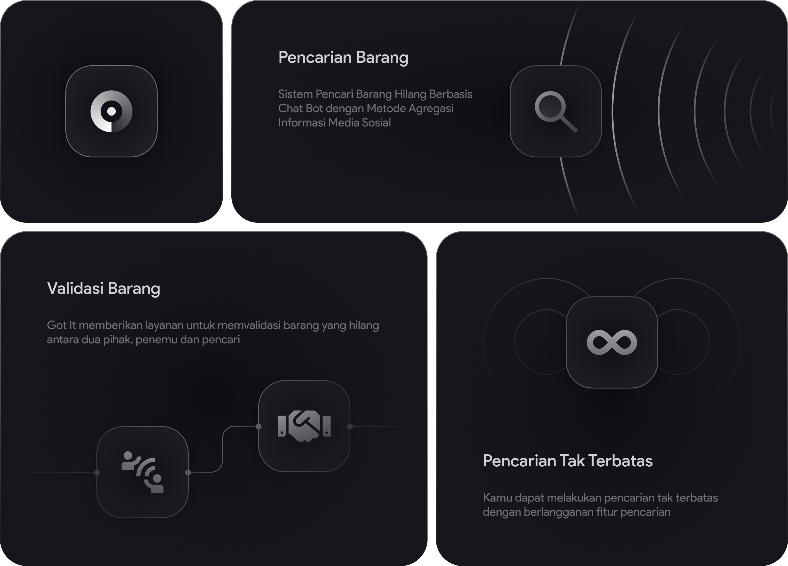
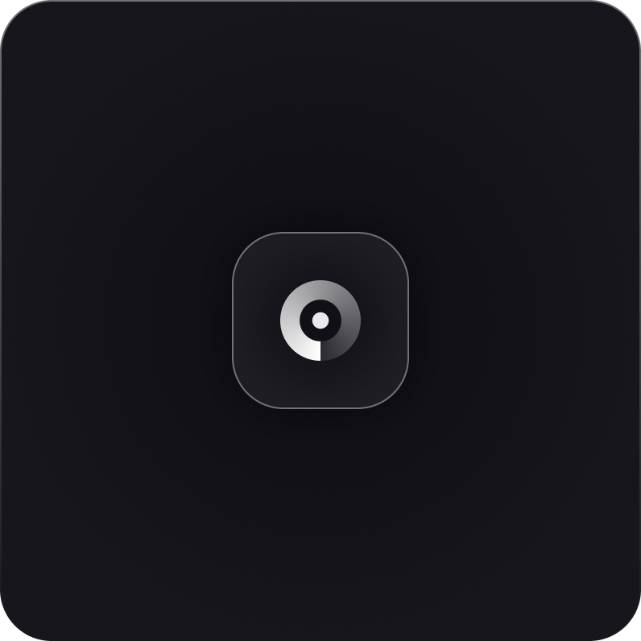
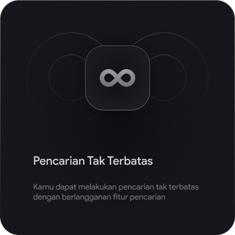
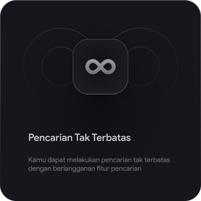
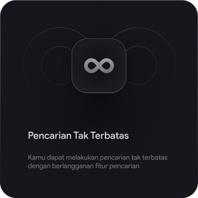

Cara Kerja Sistem
Sistem Got It melakukan scraping 3 sosial media untuk mencari informasi atau postingan barang hilang sesuai dengan informasi yang diberikan oleh pengguna.
Fitur Got It
Got It memiliki fitur-fitur yang dapat membantu pengguna dalam menemukan barangnya yang hilang.



 

